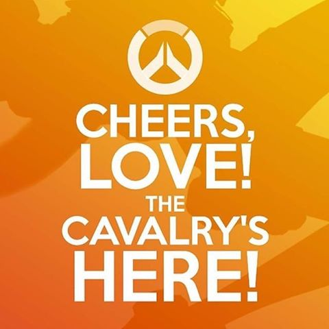

Continuing school at the University of Maine is a crucial step to accomplishing this goal. While under constant pressure from friends and loved ones to transfer somewhere closer, he really enjoys the university and wants to stay more than most things he wants.
Woah that's a bit sappy and deep. Be sure that, while Brice is a man of jokes and happiness, he does have a sensitive side that comes out in deep moments.
But enough of the sap! This is just one part of the big piece that holds Brice's life together.
Click on this link to return to the home page, where you can choose a different aspect of Brice's life to explore.
